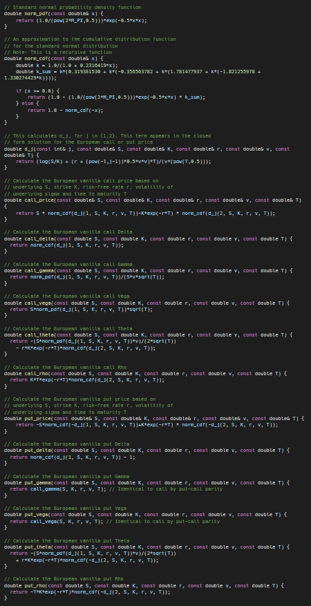

Ronak's Website
SuperSpeedyOptionsPricing
SuperSpeedyOptionsPricing is an experiment that I have worked on. I find options and how their prices change based on change in underlying price and other factors really interesting. However, this program isn't really useful to actually use to trade because it doesn't take into account how the market moves and small IV changes which are very difficult to predict. I use this to try and make it as fast as possible. I got this idea after I wrote it in python and it was really slow, so I first rewrote it in C++ and then figured out other ways to make it faster.
PS: This is heavily based on this article
These are the functions that are used to calculate option prices and their greeks, which are essentially their attributes and how its price changes based on how other factors change.

This is a function to create a file of all of the options prices and greeks given the factors. It creates one file for one implied volatility and then puts all combinations of the rest of the given factors into the file.
This is the last and main function of the program. This uses all of the previous functions and takes input from the user to figure out what it needs to calculate. At the end it calculates how long it takes using the computer's clock